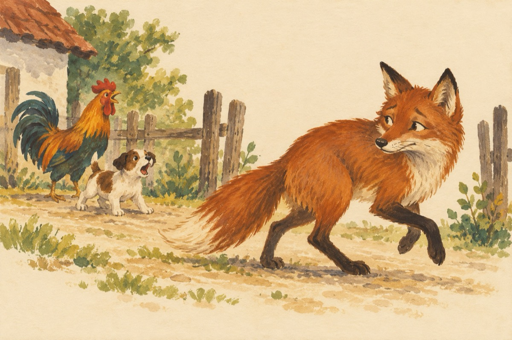

Ia mai pune-ți pofta-n cui!
Nu sunt guler cum s-ar crede
Sunt vulpoi adevărat
Stau la pândă, stau de veghe
Pentru-un cocoș ce m-a supărat!
Eu sunt leșinat de foame
Iar el cântă neîncetat
Și-am o foame doamne, doamne,
Dar deodată a-nncetat
Când să pun gheara pe el
Nu știu ce l-a apucat
Din ogradă un cățel
S-a apucat de lătrat
Iar vulpoiul a plecat!
Vasile Groza